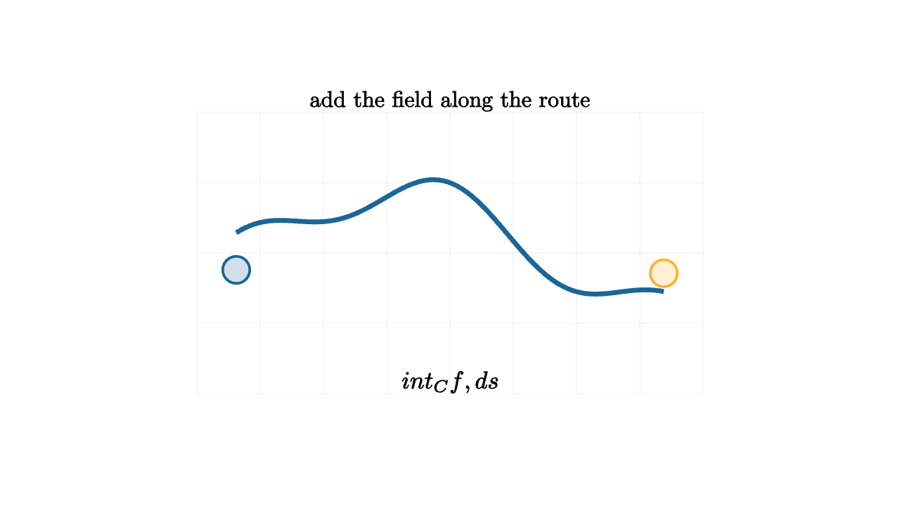

Line Integrals Add Along A Path
Imagine hiking with a small air-quality sensor. The number on the sensor changes with location. You could average the readings, mark the worst spot, or draw a heat map. A line integral asks for a different measurement: how much exposure accumulates along the actual route you walk?
The word along matters. A double integral adds over a region. A line integral adds over a curve. The curve may pass through the same temperature map, force field, or density field as another curve, yet produce a different total because it visits different places and travels different distances.
For a scalar field $f(x,y)$ and a curve $C$, the scalar line integral is
The symbol $ds$ means a tiny piece of arclength. At each tiny step, the field value is multiplied by the length of that step. Then all those pieces are added.

source
let soft = |col, amount| lerp(WHITE, col, amount)
let path = |col| stroke{col, 4} ParametricFunc(|t| [-1.9 + 3.8 * t, 0.55 * sin(1.4 * PI * t) + 0.18 * cos(4 * PI * t), 0], [0, 1, 90])
mesh diagram = [
stroke{soft(LIGHT_GRAY, 0.15), 1} LineGrid([-2.25, 2.25, 9], [-1.25, 1.25, 5], 1),
path(BLUE),
center{1.9l + 0.15d} fill{soft(BLUE, 0.2)} stroke{BLUE, 2.2} Circle(0.12),
center{1.9r + 0.18d} fill{soft(ORANGE, 0.2)} stroke{ORANGE, 2.2} Circle(0.12),
center{1.35u} Text("add the field along the route", 0.72),
center{1.15d} Tex("\\int_C f\\,ds", 0.78)
]A first course often computes line integrals by parametrizing the curve. If
then a tiny step on the curve has length
So the scalar line integral becomes
This formula says exactly what the picture says. Sample the field at the current location, multiply by the actual speed along the curve, and add over time. If the parametrization moves twice as fast through the same geometric curve, $\lVert \mathbf r'(t)\rVert$ doubles while the time interval effectively shrinks. The geometric total is the same because arclength, rather than the clock, is carrying the measurement.
There is a second kind of line integral that shows up in physics. A force field pushes in a direction, and a particle moves along a path. Work depends on the component of force in the direction of motion:
The dot product is the whole story. A tailwind does positive work, a headwind does negative work, and a sideways wind contributes zero work at that instant.
source
let soft = |col, amount| lerp(WHITE, col, amount)
let path = |col| stroke{col, 4} ParametricFunc(|t| [-1.9 + 3.8 * t, 0.55 * sin(1.4 * PI * t) + 0.18 * cos(4 * PI * t), 0], [0, 1, 90])
"Route"
mesh scene = [
stroke{soft(LIGHT_GRAY, 0.15), 1} LineGrid([-2.25, 2.25, 9], [-1.25, 1.25, 5], 1),
path(BLUE),
center{1.35u} Text("a curve chooses the samples", 0.68)
]
play Write(0.8)
"Pieces"
scene = [
scene,
center{[-1.25, -0.24, 0]} fill{soft(ORANGE, 0.25)} stroke{ORANGE, 2} Circle(0.09),
center{[-0.45, 0.42, 0]} fill{soft(ORANGE, 0.25)} stroke{ORANGE, 2} Circle(0.09),
center{[0.42, 0.36, 0]} fill{soft(ORANGE, 0.25)} stroke{ORANGE, 2} Circle(0.09),
center{[1.25, -0.36, 0]} fill{soft(ORANGE, 0.25)} stroke{ORANGE, 2} Circle(0.09),
center{1.15d} Text("each tiny ds adds one contribution", 0.62)
]
play Fade(0.8)
"Work"
scene = [
stroke{soft(LIGHT_GRAY, 0.15), 1} LineGrid([-2.25, 2.25, 9], [-1.25, 1.25, 5], 1),
path(BLUE),
stroke{GREEN, 3} Arrow(1.45l + 0.08d, 0.95l + 0.12u),
stroke{GREEN, 3} Arrow(0.55l + 0.38u, 0.08r + 0.38u),
stroke{GREEN, 3} Arrow(0.7r + 0.1u, 1.25r + 0.16d),
center{1.35u} Text("work keeps the tangent component", 0.64),
center{1.15d} Tex("\\int_C \\mathbf F\\cdot d\\mathbf r", 0.74)
]
play Trans(1.0)A concrete example helps. Suppose the curve is the line segment from $(0,0)$ to $(2,1)$, written as
If $f(x,y)=x+y$, then
Therefore
The same scalar field over a longer curved route would usually produce a different number. The integrand is attached to location, and $ds$ is attached to the path.
For work, use a force such as $\mathbf F(x,y)=\langle y,x\rangle$ along the same segment. Then
so
Path dependence
Line integrals are a good place to notice that multivariable calculus is sensitive to route. In one-variable calculus, an interval from $a$ to $b$ has a forced order. In the plane, the same start and finish can be connected by infinitely many curves. A field may reward one route and penalize another.
For scalar line integrals, the length of the route always matters. If $f(x,y)=1$, then
is just the arclength of $C$. A winding path gives a larger value than a straight path between the same endpoints. If $f$ is a density, that matches the physical picture: a longer wire with the same density has more mass.
Vector line integrals can be even more interesting. Some force fields have path-independent work. Gravity near Earth's surface is modeled this way over small height ranges: only the change in height matters. Other fields remember the route. If a force swirls around a point, going around a loop can accumulate positive work even though you end where you started.
This distinction leads to conservative vector fields. When
the work integral becomes
The path disappears from the final answer because the field is the gradient of a potential. The dot product $\nabla\phi\cdot d\mathbf r$ measures tiny changes in $\phi$, and those tiny changes telescope along the route.
Choosing the parametrization
A parametrization should make the curve easy to read. For a line segment from $A$ to $B$, use
For a circle, use
For a graph $y=g(x)$, using $x$ as the parameter often keeps the work small:
The parametrization is the story of how the curve is walked. The integral then translates that story into arithmetic. The derivative $\mathbf r'(t)$ tells the current tangent and speed. The field tells what is being sampled. The bounds tell when the walk begins and ends.
Line integrals turn curves into measuring devices. They help describe work, circulation, mass along a wire, exposure along a route, and probability along a trajectory. The habit is always the same: choose the path, parametrize it clearly, decide whether you are adding scalar density or directional work, and let the tiny pieces tell the total.